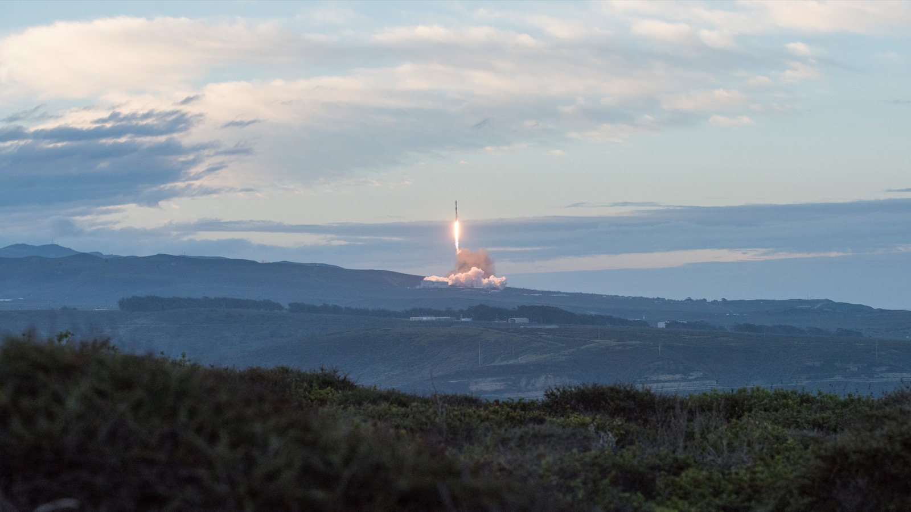
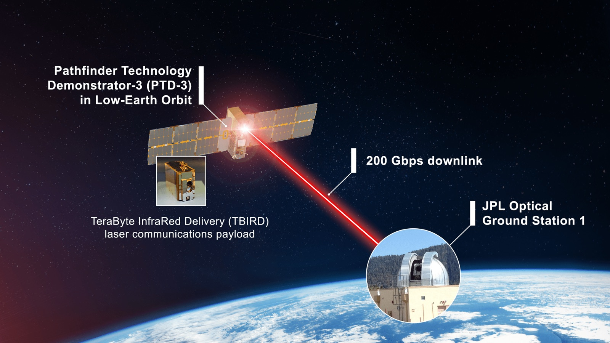

Executive Summary
구글이 자사 AI 가속기를 실은 위성 한 기를 10월 1일 스페이스X 트랜스포터-18 편으로 저궤도에 올린다. 냉장고만 한 크기에 TPU 네 개가 들어갔고, 태양전지가 내는 전력은 약 1킬로와트다. 데이터센터 서버 한 대가 통째로 하늘에 올라간다고 보면 얼추 맞는다. 이 글은 그 위성이 궤도에서 무엇을 하고 무엇을 지구로 내려보내는지를 본다.
구글이 공식 글에 적어 둔 목적은 연산이 아니다. 이 위성은 자사 TPU가 우주 비행의 물리적 스트레스와 방사선·열 극한을 "어떻게 견디는지에 대한 궤도 데이터"를 모으려고 올라간다. 실제로 이 위성의 칩은 한 번에 15분가량 돌고 나면 식히려고 멈춘다. 공기가 없어 열을 복사로만 버려야 하는 곳에서 라디에이터가 감당하는 몫이 거기까지다.
1절부터 4절까지는 구글과 보도가 밝힌 내용을 따라간다. 5절의 물음은 이 글이 세운 것이다. 계산이 놓이는 물리적 자리가 바뀌면, 그 계산에 들어가는 데이터의 조건은 무엇이 달라지는가.
주요 수치
출처: Google, Project Suncatcher: the facts (2026-09-24) · Duncan Riley, SiliconANGLE (2026-09-24).
4개
위성에 실린 TPU
구글 공식 글은 대수를 적지 않았다. 보도가 밝힌 수이고, 데이터센터 서버 한 대 정도의 연산력이다
약 1kW
태양전지가 내는 전력
전자레인지 하나를 켤 만한 양이다. 궤도 발전의 이점을 나타내는 값이 아니라 이 프로토타입의 크기다
15분
한 번에 돌릴 수 있는 시간
그 뒤에는 칩을 끄고 열을 버린다. 냉각에 걸리는 시간은 공개되지 않았다
8배
궤도 태양광의 잠재력
중위도 지상에 둔 같은 패널이 1년간 받는 양과 견준 값이다. 발전량이지 가동 시간이 아니다
냉장고만 한 위성에 서버 한 대
9월 24일 구글이 낸 글의 요지는 짧다. 프로젝트 선캐처의 첫 시제 위성이 다음 주에 올라간다. 발사체는 팰컨 9이고, 여러 고객의 소형 위성을 한꺼번에 태우는 스페이스X 트랜스포터-18 공동 탑승 임무에 끼어 반덴버그에서 떠난다. 목표 궤도는 새벽-황혼 태양동기궤도다. 지구의 낮과 밤 경계선을 따라 도는 궤도라, 위성 입장에서는 해가 거의 지지 않는다.

구글이 직접 밝힌 것과 보도가 채운 것을 갈라 두는 편이 좋겠다. 공식 글이 적은 것은 이 임무를 플래닛과 함께 개발했다는 사실, 그리고 앞으로 만들 위성은 "각각 수십 개의 TPU 칩을 실을 것"이라는 계획이다. 위성의 이름도, 이번에 실린 칩의 개수도 그 글에는 없다. 냉장고만 한 크기에 TPU 네 개가 들어갔고 MVP라는 이름이 붙었다는 것은 발사를 앞두고 나온 보도가 전한 내용이다. 그 네 개가 내는 연산력은 데이터센터 서버 한 대 수준으로 전해졌다.
전력도 그 크기에 맞는다. 태양전지가 내는 것은 1킬로와트 남짓이다. 기가와트 단위로 이야기되는 지상 AI 데이터센터의 백만분의 일 규모다. 우주에 데이터센터가 생겼다는 식의 제목이 여럿 붙었지만, 이번에 올라가는 것은 데이터센터가 아니라 서버 한 대다.
그래도 이 위성이 남다른 구석은 있다. 실린 칩이 우주용으로 따로 만든 물건이 아니라는 점이다. 위성에 쓰이는 반도체는 보통 방사선을 견디도록 설계 단계부터 달리 만들고, 그만큼 성능은 지상용보다 여러 세대 뒤처진다. 이번에 올라가는 것은 구글 클라우드 고객이 쓰는 그 트릴리움 TPU다. 지상 데이터센터에서 파는 물건을 그대로 궤도에 올려도 되는지를 확인하는 일, 이번 임무의 성격은 그쪽에 가깝다.
구글이 이 임무의 목적을 적은 문장은 이렇다. "우리 TPU가 우주 비행의 물리적 스트레스와 우주의 방사선·열 극한을 어떻게 견디는지에 대한 궤도 데이터를 모으도록 설계됐다." 같은 글은 "이번 첫 발사는 무엇이 작동하는지 확인하고, 고장 지점을 찾아내고, 그 결과를 다음 임무에 적용하는 일"이라고도 적는다. 연산 성능을 증명하겠다는 말은 어디에도 없다.
일정만 보면 구글은 서두르고 있다. 2025년 11월에 프로젝트 선캐처를 공개할 때 밝힌 다음 걸음은 시제 위성 두 기를 플래닛과 함께 올린다는 것이었고, 그 두 기는 지금도 2027년 계획으로 남아 있다. 이번에 떠나는 한 기는 그 두 기를 기다리는 대신 이미 만들어져 있던 위성에 칩을 얹어 먼저 보내는 쪽을 택한 결과다.
햇빛이 여덟 배면 계산도 여덟 배가 되나
이 프로젝트가 왜 시작됐는지는 구글이 감추지 않는다. 전기다. 공식 글의 문장은 이렇다. "저궤도에서 위성은 거의 끊기지 않는 햇빛을 받을 수 있어, 지구에서보다 최대 여덟 배 많은 태양광 발전이 가능하다."
궤도에서 햇빛을 거두자는 발상 자체는 새것이 아니다. 구글 연구팀이 2025년 11월에 낸 논문은 그 계보를 1941년 아이작 아시모프의 단편까지 거슬러 적어 두고, 뒤이어 나온 기술 구상들도 함께 인용한다. 그런데 이 계보는 늘 같은 자리에서 막혔다. 궤도에서 만든 전기를 지구로 내려보내는 일이다. 구글은 그 지점에서 방향을 뒤집었다. 전기를 내리는 대신 계산을 올린다. 우주에 데이터센터를 두자는 구상은 우주 태양광 발전이 풀지 못한 문제를 비켜 가는 쪽에서 나왔다.
여덟 배가 어디서 나오는지도 같은 논문이 설명해 둔다. 고도 650킬로미터의 새벽-황혼 태양동기궤도에서는 대기가 햇빛을 깎아 먹는 몫이 거의 없고, 지상의 낮과 밤 주기에서도 벗어난다. 같은 면적의 태양전지가 지상보다 훨씬 많은 에너지를 받는다는 계산이 그 두 조건에서 나온다. 논문이 고른 상대는 중위도 지상에 놓인 같은 패널이고, 기준은 1년 동안 받는 태양 에너지의 총량이다. 덤도 하나 붙는다. 해가 지지 않으니 밤을 버틸 무거운 배터리를 싣지 않아도 된다. 발사 중량으로 사는 우주에서 배터리를 던다는 것은 작은 이야기가 아니다.
다만 이 수치가 무엇을 가리키는 값인지는 정확히 읽어야 한다. 여덟 배는 단위면적당 만들 수 있는 전기의 양이다. 그 전기로 칩을 몇 시간 돌릴 수 있는지에 대한 값이 아니다. 전기를 많이 만드는 일과 그 전기를 계산에 다 쓰는 일은 다른 문제이고, 둘 사이를 가로막고 선 것이 열이다.
궤도가 전기를 거저 주는 것도 아니다. 지상 발전소는 땅값과 전력망 접속을 치르고, 궤도 발전소는 발사 중량을 치른다. 태양전지를 1제곱미터 늘리려면 그만큼을 로켓에 실어 올려야 하고, 그 무게가 곧 뒤에 나올 킬로그램당 발사비 계산의 밑변이다. 배터리를 덜어 내는 이점이 큰 이유도 여기에 있다. 궤도에서는 무게가 비용의 다른 이름이다.

돌리는 시간보다 식히는 시간
구글 패러다임스 오브 인텔리전스 연구팀 선임 디렉터 트래비스 빌스가 설명한 운용 방식에 이 임무의 성격이 다 들어 있다. 칩은 "약 15분의 짧은 구간 동안만 작업을 돌릴 수 있고, 그 뒤에는 식히기 위해 꺼져야 한다". 뉴욕타임스에 그가 밝힌 바로는 그 15분 안에 짧은 질의 정도를 처리해 제미나이가 답을 내놓게 할 수 있다.
우주가 차가우니 냉각이 쉬울 것이라는 생각은 거꾸로다. 진공에는 열을 실어 나를 공기가 없다. 선풍기도 냉각수 배관도 할 일이 없고, 남는 방법은 복사뿐이다. 칩에서 나온 열을 열전도 물질과 금속을 거쳐 라디에이터 판까지 옮긴 다음, 그 판이 우주 공간으로 적외선을 내보내며 천천히 버린다. 구글의 설명으로는 히트파이프와 라디에이터를 조합해 이 일을 하고, 열진공 챔버에서 미리 돌려 봤다. 지상의 데이터센터는 하루 스물네 시간 돈다. 15분은 그 사이에 놓인 거리를 그대로 보여 준다.
열만 시험하지는 않는다. 발사 자체가 첫 관문이다. 로켓에 실려 올라가는 10분 동안 위성은 중력가속도의 열 배에 이르는 힘을 받고, 개별 TPU 칩 단위로는 50~100g의 하중이 걸린다. 구글은 발사 진동수를 흉내 내 위성을 세 축으로 흔드는 시험을 마쳤다고 밝혔다. 방사선은 따로 준비했다. UC 데이비스 크로커 핵연구소의 양성자 빔 안에 트릴리움 TPU를 넣고 AI 작업을 돌리면서 선량을 올려 갔다. 가장 먼저 흔들린 것은 고대역폭 메모리였고, 이상이 나타나기 시작한 지점은 누적 2krad(Si)다. 차폐를 두른 5년 임무에서 받을 것으로 본 750rad(Si)의 세 배에 가깝다. 15krad(Si)까지 올려도 영구 고장은 관측되지 않았다. 다만 이 값들은 지상의 빔 시설에서 나온 것이고, 실제 궤도의 방사선 환경은 그 빔과 같지 않다.
칩이 죽지 않았다는 결과가 안심할 이유가 되지는 않는다. 논문이 더 공들여 들여다본 것은 입자 하나가 지나가면서 값을 순간적으로 뒤집는 현상이다. 여기에 가장 민감했던 부위는 누적 선량 때와 달리 코어 로직과 칩 안의 SRAM이었고, 증상은 멈춤이 아니라 조용한 데이터 손상으로 나타났다. 연산 도중에 결과값이 틀리는데 아무 경보도 뜨지 않는다는 뜻이다. 빈도는 17rad마다 한 번꼴이고, 차폐를 두른 이 궤도에서 1년에 받을 것으로 본 150rad(Si)와 초당 한 번씩 추론을 돌린다는 가정을 넣으면 추론 300만 번에 한 번 정도가 된다. 논문은 이 정도면 추론에는 받아들일 만하다고 보면서도, 학습 작업에서 어떻게 되는지는 더 봐야 한다고 적는다. 이 값들은 2026년 6월 개정판에서 시험 방법을 고쳐 다시 잰 것이다. 첫 판본에서는 이 현상에 가장 민감한 부품도 메모리로 지목됐고, 추정 빈도 역시 천만 번에 한 번이었다.
이 세 가지 시험에 공통점이 하나 있다. 전부 "견디는지"를 묻는다. 얼마나 빨리 계산하는지를 묻지 않는다. 그리고 지상 시험으로 확인할 수 있는 것은 거기까지다. 실제 궤도에서 하루 열네댓 바퀴를 도는 동안 지구가 되쏘는 열과 계절마다 드는 그림자가 만드는 온도 변화, 칩을 켜고 끄기를 되풀이하면서 쌓이는 열 순환, 1년에 걸쳐 누적되는 선량, 라디에이터 표면이 자외선과 원자산소에 깎이면서 떨어지는 방열 효율은 챔버가 재현해 주지 않는다. 1년 임무가 쌓는 것은 그 값들이다. 계산 결과가 아니라 칩이 늙어 가는 기록이다.
이 기록이 왜 그렇게 중요한지는 고장이 났을 때를 생각해 보면 알 수 있다. 지상 데이터센터에서 TPU 한 장이 죽으면 기술자가 가서 갈아 끼우면 된다. 논문은 그 일이 궤도에서는 불가능하다고 짚고, 지금 내놓을 수 있는 가장 단순한 대비책으로 여분을 넉넉히 싣는 방법을 든다. 몇 장을 더 실어야 하는지는 칩이 언제부터 어떻게 나빠지는지를 알아야 정할 수 있다.
열이 이 경쟁의 진짜 관문이라는 것은 경쟁사가 돈을 쓰는 자리에서도 읽힌다. 엔비디아가 투자한 스타클라우드는 2025년 11월에 H100 한 장을 실은 소형 위성을 먼저 올려, 궤도에서 작은 언어 모델을 학습시키고 구글의 공개 모델 젬마를 돌려 보였다. 그리고 이 회사가 올해 안에 올린다는 다음 위성의 자랑거리는 더 빠른 칩이 아니라 라디에이터다. 민간 위성에 실린 것 가운데 가장 큰 전개형 라디에이터를 달고, 전력은 앞 위성의 백 배를 낸다고 회사는 예고했다. 궤도에서 칩을 오래 돌리고 싶은 쪽은 결국 열을 버리는 면적부터 키운다.
이 임무가 내놓을 수 있는 가장 값진 숫자가 무엇일지도 여기서 갈린다. 발사비가 얼마나 떨어지느냐는 계산은 위성이 하루에 몇 시간을 실제로 계산에 쓰는지를 모르면 반쪽이다. 같은 위성이라도 가동률이 절반으로 떨어지면 유효 연산 한 단위의 값은 두 배가 된다. 그러니 이 임무의 실패는 위성이 죽는 쪽이 아닐 수 있다. 위성은 1년을 멀쩡히 살아남았는데 가동률이 너무 낮아, 같은 계산을 지상 랙에 맡기는 편이 자릿수 단위로 싸다는 결론이 나오는 쪽이 더 곤란하다.
2027년에 시험하는 것은 대역폭
다음 단계를 보면 구글이 무엇을 병목으로 보는지 드러난다. 2027년에 올릴 위성은 두 기이고, 거기서 시험하는 것은 더 많은 연산이 아니다. 위성끼리 빛으로 데이터를 주고받는 광 링크다. 계산 능력을 늘리는 대신 위성 사이의 통신을 먼저 증명하겠다는 순서다.
구글이 그린 그림을 보면 그 순서가 이해된다. 연구 논문에 실린 예시 구성은 고도 650킬로미터에 위성 81기가 반지름 1킬로미터 안에 모여 나는 군집이다. 이웃한 위성 사이 거리는 지구 중력장의 영향으로 100~200미터 사이를 오간다. 위성을 이렇게까지 붙여 놓는 이유가 통신이다. 광 링크의 수신 세기는 거리가 멀어질수록 급격히 떨어지니, 데이터센터 한 동에 맞먹는 대역폭을 내려면 위성들이 서로 손에 닿을 만큼 가까이 있어야 한다.
군집이 필요한 이유도 분명하다. 앞으로 만들 위성 한 기에 TPU를 수십 개씩 싣는다 해도, 큰 모델 하나를 돌리려면 여러 기가 한 덩어리처럼 움직여야 한다. 지상 데이터센터가 랙 사이를 광케이블로 묶어 두는 그 일을, 궤도에서는 100미터 떨어진 채 시속 2만 7천 킬로미터로 나는 위성들끼리 해내야 한다.
구글이 잡은 눈금은 구체적이다. 대규모 기계학습 작업을 나눠 돌리려면 위성 사이 링크가 초당 수십 테라비트를 받쳐 줘야 한다고 연구 발표는 적고, 논문 본문은 링크 하나가 감당할 총 대역폭을 초당 10테라비트 수준으로 잡는다. 현재 어디까지 왔는지도 같이 나와 있다. 실험대 위에서 송수신기 한 쌍으로 한 방향 800기가비트, 양방향 합계 1.6테라비트를 냈다. 목표를 두 값 중 어느 쪽으로 잡느냐에 따라 실험대 값의 여섯 배에서 스무 배가 남아 있고, 그 간격을 파장 여러 개를 겹쳐 보내는 방식과 공간 다중화로 메우겠다는 것이 구글의 계획이다. 고정된 실험실 광학대와 대형을 이뤄 나는 두 위성 사이는 또 다른 이야기다. 2027년 두 기가 시험하는 것이 정확히 이 지점이다. 태양광이 여덟 배라도 이 링크가 못 받쳐 주면 군집은 서버 여러 대의 모음에 그친다.
비용 쪽 조건도 같은 논문에 적혀 있다. 학습곡선을 따라가면 저궤도 발사 단가가 2030년대 중반에 킬로그램당 200달러 아래로 내려갈 수 있고, 그 지점에서 우주선 수명으로 나눈 발사비가 지상 데이터센터의 전기료와 킬로와트당 엇비슷해진다는 계산이다. 구글이 비용 동등 시점을 2030년대 중반으로 잡은 근거가 그 계산이다.
엇비슷하다는 말의 폭은 꽤 넓다. 스타링크 v2급 위성을 본으로 삼아 발사비를 수명으로 나누면 지금 가격에서는 킬로와트당 연 1만 4,700달러가 나오고, 킬로그램당 200달러가 되면 810달러로 내려간다. 미국 데이터센터가 전기에 쓰는 돈은 킬로와트당 연 570~3,000달러다. 다만 설계가 다른 위성들까지 넓혀 잡으면 같은 조건에서도 810~7,500달러로 벌어지고, 그 위쪽 끝은 지상 전기료의 가장 비싼 구간보다도 두 배 넘게 비싸다. 학습률 20퍼센트를 유지한다는 전제에는 스타십을 한 해 180회쯤 쏜다는 조건이 붙어 있고, 발사량이 그 목표에 크게 못 미쳐도 킬로그램당 300달러까지는 내려간다는 계산이 함께 적혀 있다.
대역폭 이야기는 위성끼리 주고받는 몫에서 끝나지 않는다. 계산 결과는 결국 지상으로 내려와야 한다. 이번 시제 위성은 전파를 쓰고, 논문은 광 지상 링크를 대기 흔들림과 빠른 상대 운동 때문에 따로 풀어야 할 과제로 남겨 둔다. 지금까지 공개된 가장 빠른 기록은 나사의 티버드 임무가 2023년에 지상과 저궤도 사이에서 낸 초당 200기가비트다.

정리하면 계산을 어디에 둘지 정하는 변수는 둘이다. 전력이 궤도를 매력적으로 만들고, 대역폭이 그 매력을 실제 계산으로 바꿔 줄지를 정한다. 여기에 열이 상수처럼 붙어 있다. 세 값 중 하나라도 어긋나면 나머지는 성립하지 않는다.
페블러스가 이 실험을 주목하는 이유
여기서부터는 이 글의 읽기다. 구글은 위성을 쏘고 우리는 데이터를 다룬다. 그런데 이번 임무의 산출물은 우리에게 익숙한 물건이다. 1년치 시계열 데이터셋이다. 발사 구간의 진동 스펙트럼, 누적 이온화 선량, 메모리 비트 반전 빈도, 궤도를 한 바퀴 돌 때마다 그리는 라디에이터 온도 곡선. 구글이 다음 위성을 설계할 때 근거로 삼을 것은 이 값들이지, 궤도에서 제미나이가 내놓은 답이 아니다.
그래서 이 데이터셋에는 까다로운 조건이 하나 붙는다. 표본이 한 기다. 태양 활동이 어느 국면인지, 발사 진동이 이번 로켓에서 어땠는지, 라디에이터 코팅이 어느 배치에서 나왔는지에 따라 값은 달라진다. 이 조건들이 값과 함께 기록돼 있지 않으면, 2027년 위성의 측정값과 나란히 놓았을 때 차이가 설계 개선에서 왔는지 그해 태양이 조용해서 왔는지 가릴 수 없다. 우리가 AI-Ready Data를 말할 때 수집량보다 수집 조건을 먼저 묻는 이유가 이 대목이다.
지상 시험과 궤도 실측을 이어 붙이는 일도 같은 성격이다. 크로커 핵연구소의 양성자 빔은 정해진 종류의 입자를 짧은 시간에 몰아서 쬐인다. 궤도에서 1년에 걸쳐 들어오는 선량은 종류도 세기도 시간 분포도 다르다. 두 값을 나란히 놓고 "지상 시험이 맞았다"고 말하려면, 궤도에서 무엇을 어떤 조건에서 측정했는지가 값 옆에 남아 있어야 한다. 설비 예지보전에서 시험동 데이터로 학습한 모델을 현장에 걸 때 겪는 문제와 구조가 같다. 실험실은 조건을 통제해서 답을 얻고, 현장은 조건을 기록해야 답을 얻는다.
독자 쪽으로 옮기면 물음은 이렇게 바뀐다. 내 데이터가 처리되는 물리적 장소가 바뀌면 무엇이 달라지는가. 우주까지 가지 않아도 이 물음은 이미 현업의 것이다. 온프레미스에서 클라우드로, 한 리전에서 다른 리전으로, 중앙 서버에서 현장 장비로 계산이 옮겨 갈 때마다 세 가지가 함께 바뀐다.
- 전력을 어디서 얼마나 안정적으로 받는지. 이것이 그 장소에서 모델을 하루에 몇 시간이나 쓸 수 있는지를 정한다.
- 데이터가 오가는 경로의 대역폭과 지연. 계산을 옮기기는 쉬워도 데이터를 옮기기는 대개 더 비싸다.
- 그 장소에서만 생기는 열화와 고장의 양상. 궤도에서는 방사선이고, 공장 현장에서는 먼지와 진동이다.
구글이 15분이라는 숫자를 숨기지 않은 점은 눈여겨볼 만하다. 자기 실험의 가장 정직한 약점을 공개한 셈이고, 다음 설계가 어디를 손봐야 하는지도 그 숫자가 가리킨다. 데이터 품질 진단이 하는 일도 결국 이와 같다. 잘 도는 구간을 확인하는 것보다, 어디서부터 못 버티는지를 값으로 남기는 쪽이 다음 판단에 쓸모가 있다.
여기까지 읽어 주셔서 감사하다. 이 글이 인용한 임무 내용과 시험 결과는 구글이 낸 글에서, 군집 구성과 발사비 계산은 2025년 11월 연구 발표에서 확인할 수 있다. 여러분의 조직에서 계산이 놓인 자리를 옮겨 본 적이 있다면, 그때 데이터 쪽에서 무엇이 함께 바뀌었는지 이야기를 나눠 주시면 좋겠다.
참고문헌
공식 소스
- 1.Beals, T. (2025, November 4). Exploring a space-based, scalable AI infrastructure system design. Google Research Blog.
- 2.Beals, T. (2026, September 24). Behind Project Suncatcher, our moonshot to put AI in space. The Keyword (blog.google).
학술 논문
- 3.Agüera y Arcas, B., Beals, T., Biggs, M., Bloom, J. V., Fischbacher, T., Gromov, K., Köster, U., Pravahan, R., & Manyika, J. (2026, June 17, v2; original 2025, November 22). Towards a future space-based, highly scalable AI infrastructure system design. arXiv:2511.19468.
업계·보도
- 4.Wheatley, M. (2026, September 24). Google's first Project Suncatcher AI satellite set to blast off into orbit next week. SiliconANGLE.
- 5.Schauer, K. (2024, September 25). NASA's Record-Breaking Laser Demo Completes Mission. NASA.
- 6.Project Suncatcher: Google to launch TPUs into orbit with Planet Labs, envisions 1km arrays of 81-satellite compute clusters. (2026, September). Data Center Dynamics.
- 7.Google is sending its AI chips into orbit for the first time next week. (2026, September 24). Quartz.